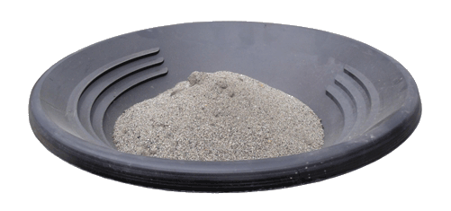

General Mineral Processing & Mining
Methods to Clean Your Mining Concentrates
The gravimetric concentrator provides a concentrate which requires final cleaning or upgrading. Common methods include:
Table
Tables and bowls have been proven to be very effective for final cleaning. They are slow but very clean. They use no chemicals are safe for the environment and your family. They are fun and provide immediate gratification – after each cleanup you will see high grade gold.
Regional Mineral Processing
Regional mineral processing is becoming more common around the world. Miners are using iCON Gold Recovery equipment at their site and transporting a small volume of concentrate to regional processing plants. This is becoming the method of choice where hard rock miners have learned the value of their tails and are using the iCON to pre-concentrate the sulfides or entrapped gold.
You may be able to reduce your ore to 2 to 3% and concentrate the entrapped sulfide gold.
Cyanide Leaching
This is the recommended method of the Global Mercury Program. Without pre-concentration the volume of material to treat and the amount of chemicals are tremendous. Concentration allows the operator to treat a reasonable amount of material either on site or at regional facilities serving many mines.
Mercury Amalgamation
This is not recommended due to the environmental impacts and the effectiveness of the bowl and/or tables. When practicing ‘whole ore amalgamation’ a miner will place mercury directly into the ball mill. In this case 100% of the ore is exposed to mercury. When a concentrator is used the amount of ore can be reduced dramatically to a small amount of concentrate. 1 ton (1000 kg) of ore could be reduced to 1 kg of concentrate. If the miner chooses to amalgamate the concentrate only a fraction of the mercury would be used and only a small percentage of the ore would be exposed to Hg.
The iCON Gold Recovery process allows an operator to either amalgamate, table or bowl a reasonable quantity.
Batch Process / Cycle Time
The "i" series of concentrators use a batch process. Your cycle time will depend on the grade and weight of your feed. A heavy or rich feed will need a shorter cycle time. The iCON "i" concentrators can be cleaned out in around 3 minutes.
Hard Rock mining operations may have 100 grams of gold per ton of feed. This is very rich. In this case it is common to run for only 10 minutes between rinse cycles. You may choose to feed at ½ ton per hour.
When upgrading concentrates you will be processing rich and heavy material. In this case the cycle time may also be only 10 minutes. Here you may be feeding at ½ ton per hour.
Alluvial mining operations will have less value and lighter feed. In this case you may choose a batch cycle time of 2 hours.
Every feed is different. The proper process for you will be determined by analyzing the free gold in your tails and adjusting your process to fit your ore.
Capacity
The throughput of the i150 Centrifugal Concentrator is nominally 2 tons per hour. If you have large material in your feed, if you have a heavy feed or if you are using iCON gravity concentrators to ‘upgrade’ a concentrate the throughput will be reduced. All ores and all processes are different. Each user must assess their situation as with any mineral recovery process.
| Process Examples | |||||
| Alluvial Mining | Upgrading Alluvial Concentrates | Drilling Sampling Exploration | Initial Hard Rock Processing | Hard Rock Tails Scavenging | |
| Feed Rate | |||||
| Tons / Hour | 2 | 0.5 | 2 | 1-2 | 1-2 |
| Kg /Hour | 2000 | 500 | 2000 | 1000-2000 | 1000-2000 |
| Batch Time | |||||
| Minutes | 120 | 30 | 10 | 10 | |
| Feed per Batch | |||||
| Kilograms | 4000 | 250 | 20 Kg Sample | 330 | 330 |
| Concentrate Volume | |||||
| Kilograms | 1 | 1 | 1 | 1 | 1 |
| Concentration Ratio | |||||
| Ratio | 4000:1 | 250:1 | 20:1 | 330:1 | 330:1 |
What to expect from iCON Gravity Concentrators
It is common for internet advertisements to show a process where a small amount of gravel goes in and a large quantity of bright shiny gold comes out. Experienced miners know this is not the case. A sluice box is a gravity concentrator. Let’s say you put 1000kg of feed over your sluice. At the end of the day, you may have 20kg of ‘concentrate’. This concentrate is not bright and shiny, in fact, it looks just like the feed material. This material has to be post processed to further ‘clean your cons’ and give you a sellable product. Although a sluice can give you a very high concentration ratio, it is not effective for recovering fine gold. In the case of sluice operations, miners are choosing iCON Gravity Concentrators to further concentrate the vast amount of material accumulate in the sluice.
When using an ‘enhanced centrifugal concentrator’, you may put up to 1000 kg into the process and get 1kg out. This will be a ‘concentrate'. It will look just like the feed material. Some people choose to sell this concentrate while others choose to continue refining it to shiny, clean, high grade gold.

This photo shows what your concentrate may look like. It will not be pure gold and will require post processing.
This photo reveals 2 sizes of gold.
The larger material passed over the iCON Screen and was caught in the nugget trap.
The finer gold was recovered in the concentrator.
It is the same material from above.
Click below for more information on iCON Applications:
iCON Applications - General Mineral Processing
iCON Hard Rock - How the iCON Works - iCON Gold Recovery History